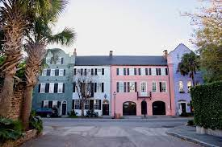
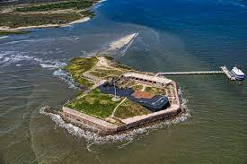
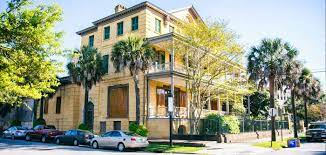

Take a Tour
 Tours in Charleston can be an exciting adventure as you can choose a tour that would be best for you. Tours can be very informational and provide very interesting facts as you can also familiarize yourself with the city. The different tour options are endless with the choices of a horse drawn carriage tours, cemetery tours, pirate tours, dungeon tours, and my personal favorite: ghost tours! Many tours will also allow you to pick “areas” of Charleston you will be touring or focusing on. Tours can be a fun way to learn your way around the city and learn about some awesome history of Charleston!
Fort Sumter
 Although Fort Sumter is visible from the Battery, you can also travel to the island and go inside it! As a big part of the Civil War, Fort Sumter is a prominent part of Charleston with a great amount of history around it and the nearby buildings. As you take a brief ferry ride through Cooper River to get to Fort Sumter, enjoy the beautiful sites and landmarks of Charleston and bridges.
Go To A Museum
 There are plenty of museums within the city that help show the historical importance of Charleston. Many of these museums were the homes of important people during-or before-the civil that allow people to imagine the lives they lived while in Charleston. Some of these house museums haven't been "modernized" in the sense that they still run on candlelight, which sets the scene of the Civil War even more! These historical museums can also range from giving a broader history of Charleston to talking about specific people's lives before the house was converted into a museum.